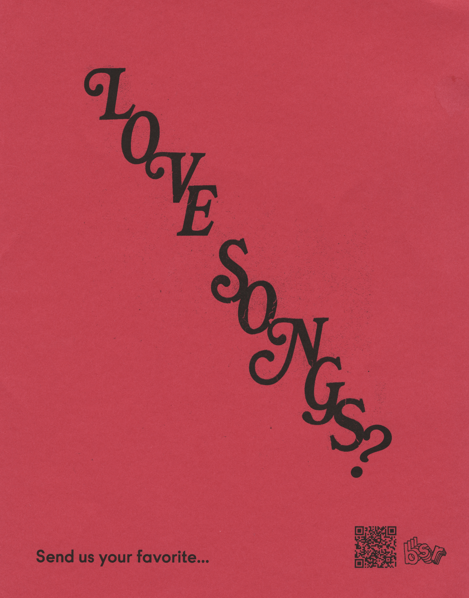
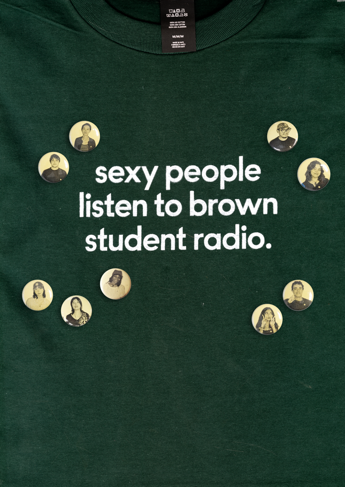
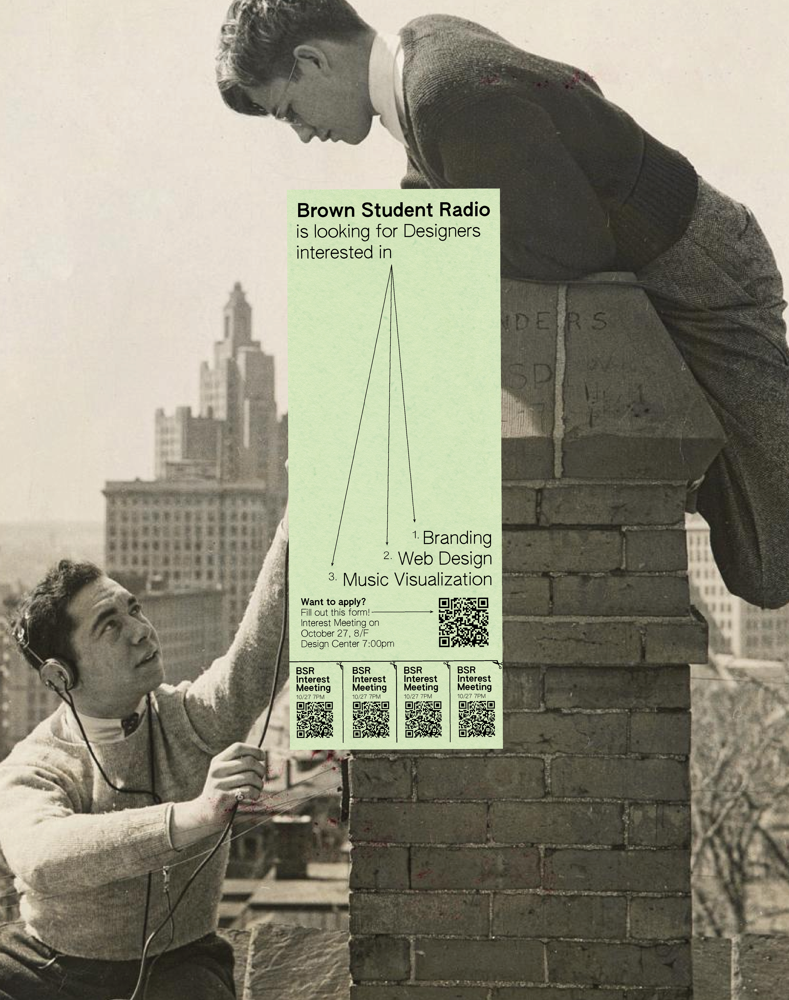

Brown Student Radio (BSR) is a college radio station programmed and run by Brown University students and Rhode Island community members. At its core, BSR is a platform for cross-genre music shows, podcasts, and talk shows.


